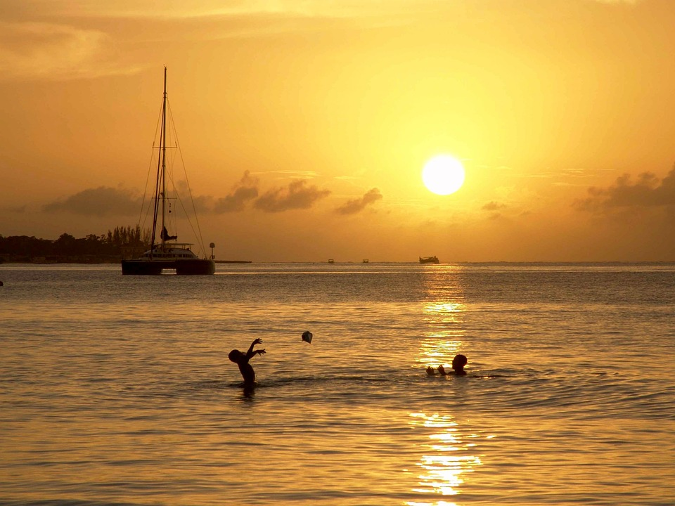
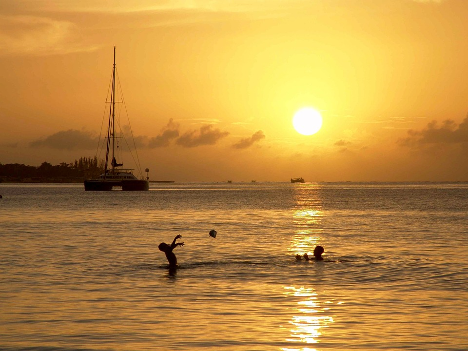

Population
les Maldives sont une nation dont le peuple remonte à plus de 2500 ans. La culture et les traditions du pays, la diversité des traits physiques de la population témoignent du fait que le pays fut, en raison de sa situation géographique, un véritable creuset de populations et de cultures. La langue maldivienne est le Dhivehi, une langue indo-aryenne qui trouve ses origines dans le sanskrit.
 
